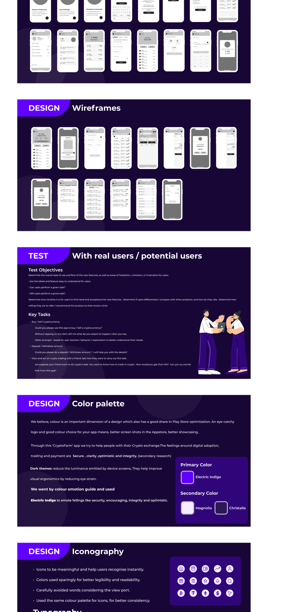
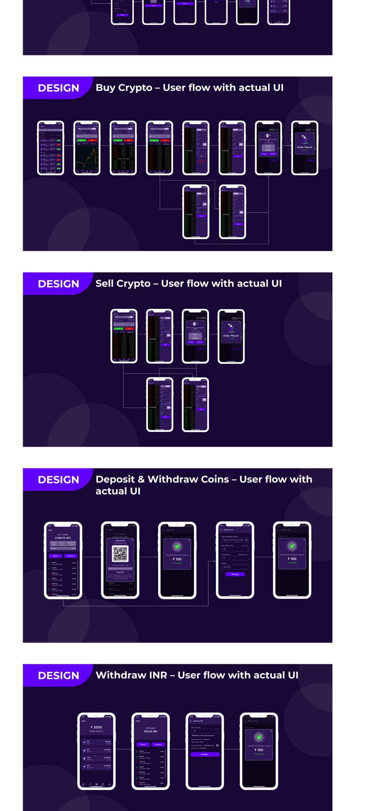

The buy/sell screen got more design attention than any other
Built around the prioritization matrix, not a generic template
Navigation put the trade chart and buy/sell flow one tap from home, matching their prioritization score. Lower-frequency actions (settings, manual rate adjustment) were pushed deeper rather than competing for primary navigation space.
Entry to completion, including where it could go wrong
Documented error/empty/auth states for this flow weren't preserved individually. The one confirmed design intent: every action needed an explicit, unambiguous confirmation — the opposite of a silent success.
Plain first, so the IA could be argued about before visual polish arrived

Colour, type, and the confirmation moment
Electric Indigo was chosen deliberately, not decoratively — colour-emotion association research points to indigo carrying security, clarity, and optimism, exactly the register a first-time trader needs. Prompt was chosen for legibility at small sizes, and a dark theme reduces eye strain for a screen people said they checked more often than they wanted to.

The buy/sell flow is where it all had to come together: live rate, order type, confirmation, and result, without making a mistake feel costly. Every extra tap was a tap where trust could break, so it got the most iteration of anything in the app.